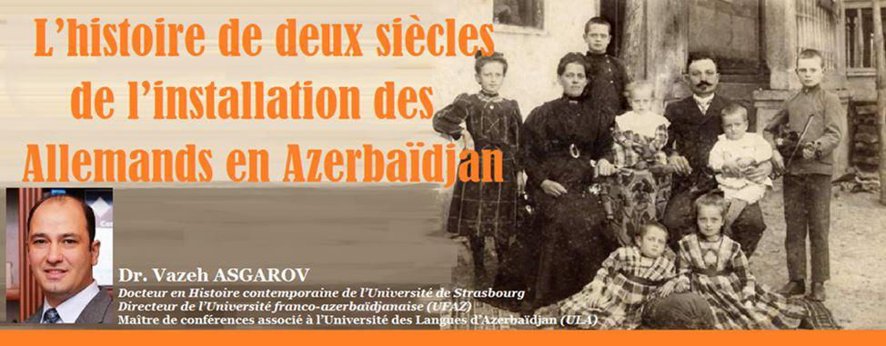
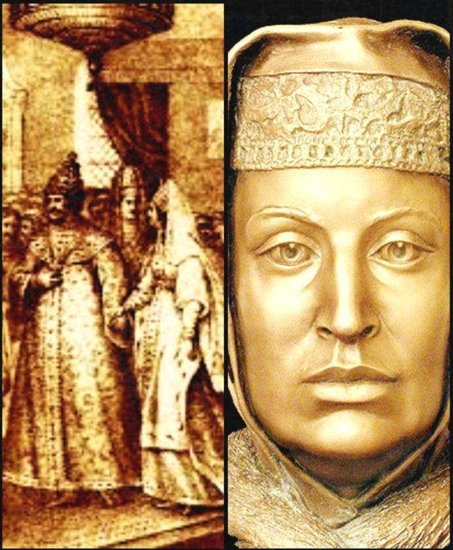
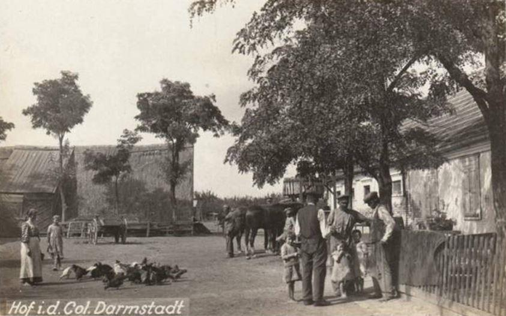
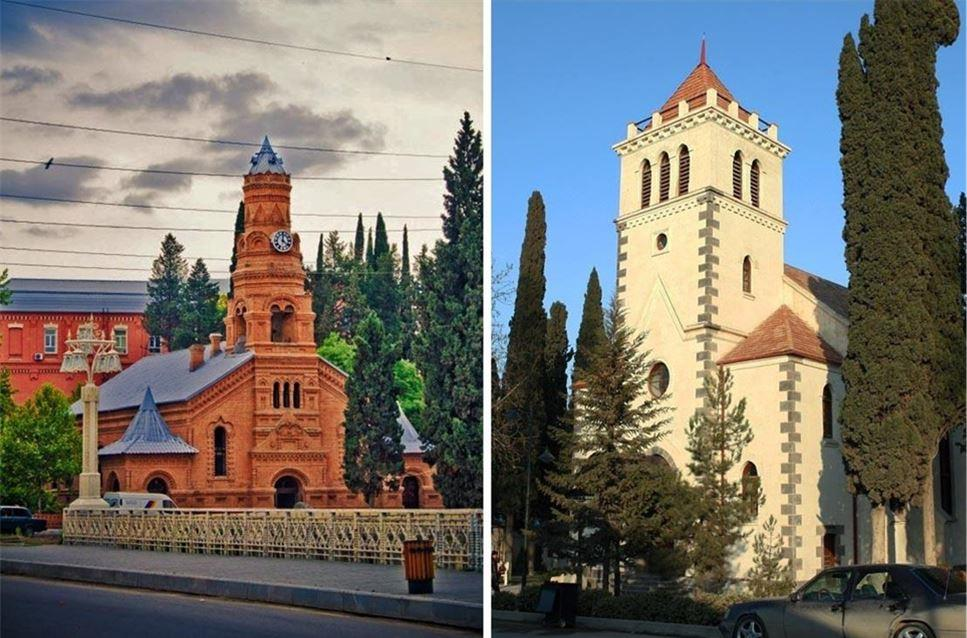
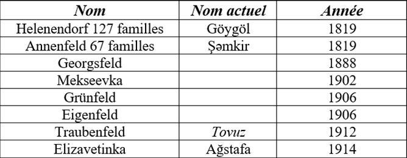
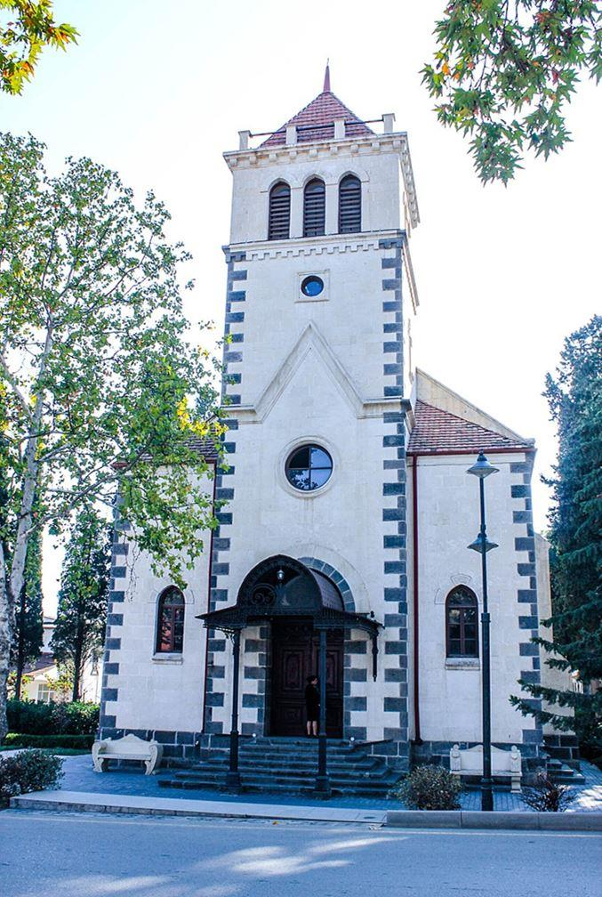
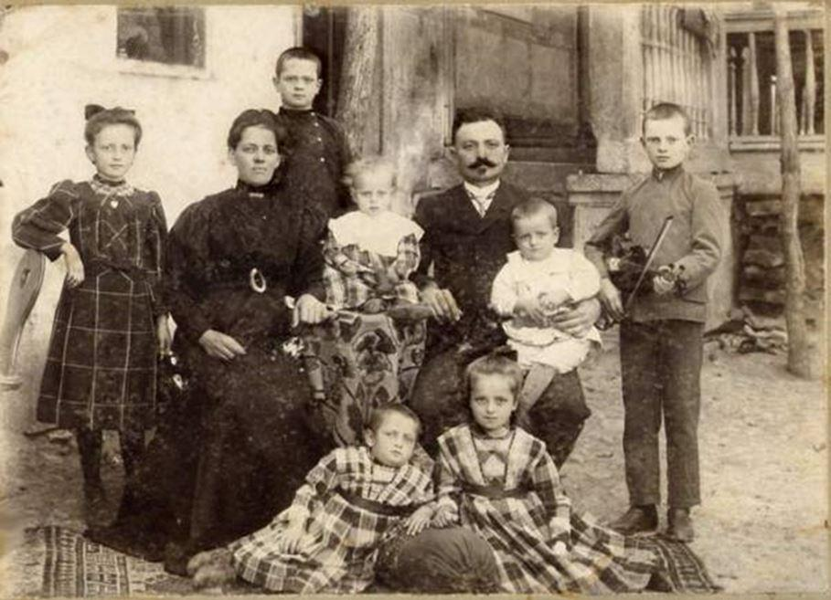
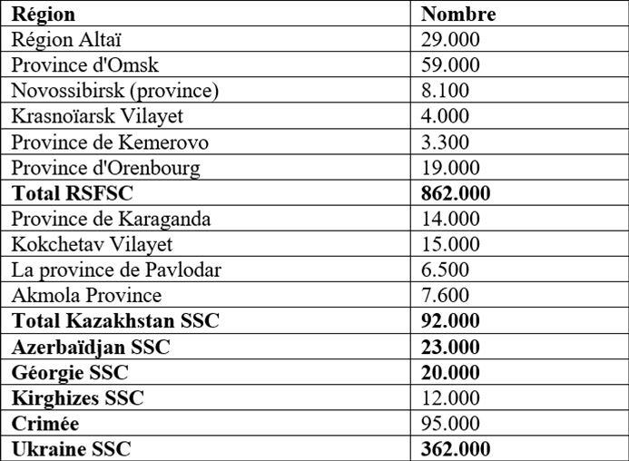
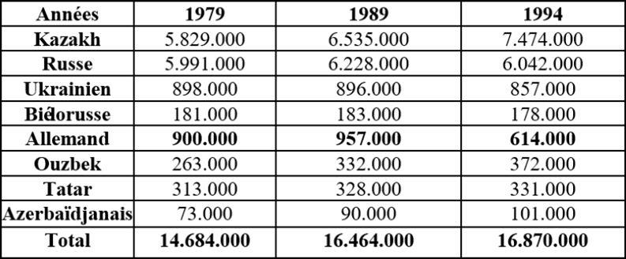
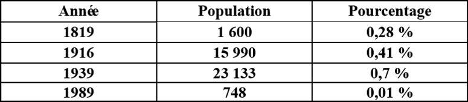

L’histoire de deux siècles de l’installation des Allemands en Azerbaïdjan
par Vazeh ASGAROV

La migration moderne commence par des migrations européennes vers le continent américain. Des masses d’hommes basculent vers de Nouveaux Mondes et pénètrent des espaces inconnus. Pendant cette période, dans la société il existait des raisons différentes pour la motivation de déplacement. On distinguait deux types : l’organisation et la désorganisation forcée (esclavage) et volontaire (travail, l’argent). Aujourd’hui, les raisons qui caractérisent les migrations arrivant dans d’autres pays riches sont multiples : économique, démographique, politique, etc.
Le mot immigré du milieu des années quatre-vingt, à l’apparition du couple identité nationale-immigration, alors que le syntagme travailleur immigré, était plus courant dans les années soixante et soixante-dix. L’immigré est associé au travailleur appartenant à un sous – prolétariat. Ces immigrés, à l’inverse des ouvriers français, retournaient dans leurs pays d’origine une fois leurs travaux terminés. Même si ces deux mots étaient associés, un immigré n’était pas forcément un étranger ou un travailleur puisque ce terme regroupait également des femmes et des enfants.
Quant au terme migrant, il présupposait une certaine neutralité qui exprimait le mouvement en dehors de toute considération d’origine et utilisée essentiellement dans l’usage administratif ou scientifique, tandis que le terme étranger a plutôt utilisé dans les statistiques officielles, les textes de loi, les recherches universitaires ou spécifiques1.
En 1984, l’Encyclopedia Universalis, dans sa deuxième édition a donné l’explication du mot immigré. Par contre, le migrant était la seule dénomination désignative de ce groupe social figurant dans la première édition publiée entre 1968-1975. Dans la deuxième édition (1984) le mot immigré désigne : départ, pays, accueille, retour, migration, émigration. La Troisième édition de l’Encyclopédie (1988) donne les entrées suivantes : droit, nationalité, asile, intégration, immigration et demandeur (d’asile).
« Immigration — entrée dans un pays de personnes non autochtones qui viennent s’y établir, généralement pour trouver un emploi » est la définition que donne Le Nouveau Petit Robert de la langue française 2008 pour la signification du mot immigration. Emigrare est un mot latin signifiant « s’installer ailleurs ». En arabe le hajr mot signifie « partir d’un lieu à un autre ». En 622 apr. J.-C., ce mot était donné aux musulmans qui suivaient le prophète Mohammed de la Mecque à Médine.
Nous avons signalé qu’entre les XVIe et XVIIe siècles il existait deux types de migrations de la population dans le monde : la migration volontaire et la migration forcée. Dans le premier cas il s’agissait d’émigration européenne vers le nouveau continent afin de coloniser les territoires nouvellement découverts et le deuxième cas était lié au commerce d’esclaves menés entre l’Afrique et l’Amérique via Europe afin de développer les nouvelles terres.
Pendant cette période il y a eu un changement radical dans la politique de la Russie. L’organisation du pouvoir politique devient nationale. Les Grands Knèzes de Moscou ont acquis un statut égal aux autres pays européens. Le mariage d’Ivan III à Sophie Paléologue, la nièce du dernier empereur byzantin joua le rôle important2. La possession de pouvoir est exclue pour les personnes avec d'autres nationalités et religions.
Au milieu du XVIe siècle la plus grande partie de la population russe vivait dans les territoires de la Russie centre et l’ouest du continent de l’Europe. À partir du début du XVIe siècle on assiste à l'expansion territoriale de l'État russe en présence d’une activité menée pour la politique de colonisation. Nous constatons que jusqu’à cette période la Russie a déjà accumulé de nombreuses années d'expérience au détriment des ressources humaines internes dans l'aménagement des territoires de la Volga ainsi que la Sibérie. Ce ne sont que les jeunes familles qui ont été visées pour la réalisation de la politique de colonisation interne. Pour des nombreux paysans russes l’exonération fiscale était estimée comme une grande opportunité. En 1732, le gouvernement d'Anna Ivanovna a tenté de réaliser le déplacement forcé de la population à la région de Volga. 1057 familles des Cosaques du Don ont été déportées3. Pourtant, les Cosaques, en tant que les soldats protégeaient avec succès les nouveaux territoires mais les maîtrisaient difficilement et même participaient au vol sur les routes commerciales.
Pour l'aménagement et le développement de nouvelles terres, le gouvernement tsariste décide de changer sa politique plutôt vers les pays de l'Ouest. L'une des orientations de cette politique était d'attirer des colonies étrangères, grâce auxquelles au cours de la seconde moitié de XVIIIe et début du XIXe siècle, les territoires du Sud-Est et les parties européennes de la Russie ont été occupé.
En général, l’histoire de l’émigration des Allemands (Aussiedler) vers la Russie a commencé sous le règne de Catherine II entre 1762 et 1763. Depuis le XVIe siècle, les rives de la moyenne Volga, arrachées aux Tatars, restaient inhabitées. L’impératrice de la Russie, ayant profité de l’occasion a ordonné d’installer les migrants allemands sur ces territoires. Il a été créé deux zones de peuplements. La première est dans la rive de la Volga celle de région de Saratov. La deuxième se composait d’une série de colonies à Saint-Pétersbourg, en Transcaucasie, en Ukraine, en Volhynie et en Bessarabie. Ayant accepté l’invitation de Catherine II de venir s’installer sur les rives de la Volga, quelques dizaines de milliers d’Allemands, devenus plus de deux millions un siècle plus tard, pénétrèrent en Asie centrale et notamment sur le territoire de l’actuel Kazakhstan.
Catherine II, arrivant au pouvoir en juin 1762, commença sa politique de colonisation par un décret du Sénat4 du 14 octobre de la même année. Le 4 décembre 1762, elle a signé un Manifeste pour assurer la circulation des colons en Russie. Entre les années 1762 et 1763, des centaines d'exemplaires de ce manifeste ont été imprimés en russe, en allemand, en français, en anglais, en polonais, en tchèque et en arabe. Les diplomates Russes ont été chargés de le diffuser aussi largement que possible dans toute l'Europe.
Une fois arrivés sur place les migrants étaient exemptés de « toutes sortes d'impôts et charges » selon la période de temps de leurs contrats. Par exemple, durant 30 ans s’ils sont installés dans des colonies des territoires enregistrées dans le registre ou 10 ans pour ceux qui choisissaient de s’installer dans les villes de province et seulement 5 ans pour ceux qui souhaitaient s’installer à Saint-Pétersbourg, Moscou et les villes qui se trouvaient vers Livonie, l'Estonie et la Finlande.
Malgré des succès temporaires de la diplomatie russe, la situation de déplacement devenait plus en plus difficile. Le 17 mai 1776, le Prince Golitsyne dans une lettre à Catherine II insiste de mettre fin à la colonisation afin de préserver des bonnes relations avec les États d’Allemagne. Entre les années 1763-1766, 30 000 personnes ont été transportés en Russie5.
Il est aussi intéressant de savoir les causes principales d’installation des Allemands en Russie. En effet, le départ des Allemands vers la Russie était et reste encore aujourd’hui un fait étonnant de l’histoire. Le phénomène réside dans le fait que la Russie même avant l’époque de Pierre le Grand cherchait toujours activement les alliés à l’extérieur. L’arrivée des Grecs a contribué à la culture, l’architecture et l’écriture au peuple russe. Pourtant, les Grecs sous le régime du tsar ne présentaient pas un groupe puissant et nombreux. Ils n’ont été non plus intégrés à la politique et l’économie du pays d’accueil. Un autre cas est le peuple français qui a eu une profonde influence sur l’histoire de la Russie. Durant cette période la noblesse russe fait la connaissance avec des œuvres d’art et de la littérature française. La langue française pendant des décennies était le langage parlé d’élite. Pourtant, l’installation des Français n’était pas en masse. N’arrivant pas s’intégrer à la société, les professeurs à domicile comme les militaires retournaient en France. Seuls les Allemands, dont les coutumes et les habitudes semblaient pourtant bien différentes et ne convenant pas aux coutumes russes, préférèrent non seulement rester sous l'Empire russe mais par ailleurs ils s’y sentirent très à l'aise.
En explorant l’histoire des colonies allemandes dans le Caucase, il faut d’abord préciser comment les représentants d’un peuple occidental aussi lointain que les Allemands se sont retrouvés en Russie et y ont fondé leurs colonies de peuplement. Pour répondre à cette question, il est nécessaire de comprendre les raisons qui ont motivé la réinstallation des Allemands dans le Caucase. Les raisons de la réinstallation peuvent être divisées en deux groupes. Le premier groupe de raison est constitué par le contexte historique et sont liées à la situation interne difficile en Allemagne au début du XIXe siècle et le second groupe a eu des raisons reflétant la situation politique et économique de cette période en Azerbaïdjan, dans le Caucase et, en général, dans l'Empire russe, poursuivant une politique de colonisation et de réinstallation active dans la région du Caucase nouvellement envahie.
Une autre cause de l’immigration des Allemands vers la Russie a été liée à la guerre menée par Napoléon en Europe qui a dévasté et fragmenté l’Allemagne à des dizaines de royaumes. La divergence de point de vue de la religion, créant différentes sectes, a aggravé la situation particulièrement dans le sud des États allemands, surtout dans le royaume du Wurtemberg et a causé le départ de la minorité de cette région vers l’Est, principalement vers le Caucase. Une autre cause de l’émigration des Allemands était la raison de la confession. Ayant des idées fanatiques et estimant qu’il y a des pensées antéchrists en Europe de l’Ouest et que le peuple s’est éloigné de Dieu, ces Allemands préféraient émigrer. Ils étaient sûrs que « le dernier jour » approchait et pour cette raison il fallait se rapprocher à Jérusalem, la ville choisie par le Dieu même. Une autre cause était l’instabilité politique et économique en Allemagne où il y avait plus de 30 royaumes.
La fragmentation politique exacerbait la situation économique difficile qui nuisait surtout à la vie des masses et conduisait à une émigration massive. Les régions méridionales de l’Allemagne - le Württemberg et le Bade, plus exposées aux guerres napoléoniennes, aux destructions et aux ruines, se sont retrouvées dans une situation particulièrement difficile. Dans le royaume du Wurtemberg, qui était l’une des régions les plus développées d’Allemagne au début du XIXe siècle, avec la situation politique complexe se sentait un déclin économique. Le manque de terres, l'augmentation des impôts, l'augmentation du nombre de recrutement, les mauvaises récoltes et la famine, qui ont éclaté en 1816, ont conduit à la ruine et à l'appauvrissement des masses, en particulier des paysans qui a renforcé les processus de migration. En outre, au début du XIXème siècle la situation religieuse s'est aggravée à Württemberg et le séparatisme – les mouvements sectaires se sont intensifiés. Les masses appauvries, insatisfaites du déclin économique, se sont tournées de plus en plus vers les mouvements religieux sectaires, cherchant en elles le salut et le soutien dans la situation difficile qui prévaut dans le pays. Ainsi, selon les recherches historiques, les sectaires ont fait appel à l'empereur de Russie Alexandre Ier, qui, en 1816 lors du Congrès de Vienne, est passé par Stuttgart avec une demande leur permettant de s'établir dans le Caucase. La politique de l'Empire russe prévoyait d’augmenter le peuplement dans les territoires nouvellement conquis de Transcaucasie6.
Ainsi, après avoir examiné en détail les principales raisons de la réinstallation de colons allemands dans le Caucase, nous pouvons tirer de brèves conclusions sur la base des éléments susmentionnés. L'un des facteurs importants qui ont une grande influence sur la réinstallation d'un groupe de colons allemands dans le Caucase est la politique de l'Empire russe, menée dans les territoires nouvellement conquis de Transcaucasie. Ainsi, après avoir examiné en détail les principales raisons de la réinstallation de colons allemands dans le Caucase, nous pouvons tirer de brèves conclusions sur la base des éléments susmentionnés. D'une part, il s'agit de situation politique, économique, religieuse et idéologique complexe et controversée qui s'est développée en Allemagne s'est scindée en de nombreux petits États, d'autre part, les intérêts de l'Empire russe dans la région nouvellement conquise du Caucase et la politique de migration en cours, ainsi que la cohérence et la concordance des intérêts de ces grands États avec les intérêts et les aspirations d'un petit groupe de la population allemande - toutes ces raisons, dans l'ensemble, étaient globalement la raison et ont conduit à la réinstallation au début du XIXe siècle en allemand les colons de l'Allemagne vers le Caucase du Sud.
L’occupation de l’Azerbaïdjan par la Russie
L’Azerbaïdjan se trouvait géographiquement sur la Route du Soi et attirait toujours l’attention des commerçants et des voyageurs. Outre cela ayant les voisins proches et puissants comme la Russie, l’Iran et la Turquie, elle présentait aussi un terrain de bataille pour ces pays qui avaient les conflits entre eux. L’intérêt de la Russie à conquérir ces territoires est apparu sous Ivan le Terrible (1530-1584) et a été parfaitement gardé sous Pierre le Grand (1672-1725). Cette campagne militaire permet de comprendre l’importance stratégique élevée du Caucase dans l’affrontement millénaire en Europe. Pierre le Grand et ses généraux constatent la nécessité de la conquête de la chaîne montagneuse Caucasienne. La Grande Guerre du Caucase durait 70 ans, de 1802 à 1872.
En même temps, il faut signaler que pendant une longue période de l'histoire, l'Azerbaïdjan partageait le destin commun avec l'Iran, y compris l'islamisation commencée au milieu du VIIe siècle et l'introduction de la branche chiite de l'Islam à XVIe siècle lors de la dynastie Séfévide. La fin du XVIIIe et le début du XIXe siècle la situation intérieure et internationale de l'Azerbaïdjan était très complexe. Le morcellement du territoire de l'Azerbaïdjan en petits états féodaux, les guerres intérieures infinies entre les khans pour l'acquisition du territoire du khanat voisin, le renforcement de la contradiction massive entre les féodaux et les paysans, la décadence économique étaient caractéristiques de la situation intérieure de l'Azerbaïdjan. Les initiatives de conquête de la Russie tsariste, de l'Iran du chah et de la Turquie ottomane concernant la Transcaucasie, les démarches dévastatrices des conquérants iraniens compliquaient encore plus la situation.
Carte postale du début du XXe siècle avec une image photographique de colons allemands de la colonie de Darmstadt près d'Odessa

Source : Encyclopédie historique soviétique tome, 3, М., 1963, p.971.
Le traité d’Istanbul avait une grande signification pour la Russie, ainsi que pour la Turquie. Cet accord prévoyait de maintenir la stabilité sur le territoire de l'Azerbaïdjan. La Russie renforçait sa position dans la mer Caspienne et empêchait les troupes turques d’avancer vers les rives de la mer Caspienne. Après la conclusion de cet accord, au début de 1725, toute la Géorgie, le khanat d’Erevan (le territoire de l'Arménie actuelle) et une partie de l'Azerbaïdjan se trouvaient sous l'autorité de l’Empire ottoman. La côte occidentale de la mer Caspienne était sous domination russe7.
Au début des années 30 du XVIIIe siècle, la situation de l'Azerbaïdjan a changé brutalement. Son territoire devient l'arène de conflits entre la Turquie ottomane et l'Iran. Il faut aussi noter qu’après la mort de Pierre le Grand la politique intérieure et extérieure de la Russie était très difficile. Les grands pays européens comme la Grande-Bretagne et la France, à leur tour, encourageaient l'Empire ottoman et l’autorité perse, pour résister à la Russie. L’idée n’était pas seulement de fournir une assistance militaire et diplomatique, mais, également, de transformer cette région du Caucase à une de leurs colonies avec ces circonstances favorables. L’état Séfévide aussi demandait instamment aux Russes de quitter les territoires de l'Azerbaïdjan. Ainsi, il est apparu nécessaire à conclure un traité de paix le 21 janvier 1732, entre l'Iran et la Russie à Resht8.
Tout au long du XVIIIe siècle, jusqu’au début du XIXe siècle, ces trois empires ne cessent d’entreprendre des démarches sur les territoires d’Azerbaïdjan. Les puissances d'Europe occidentale, surtout l'Angleterre et la France, ayant les plans d’occupation de la Transcaucasie, suivaient les actions avec une grande patience. À la fin du XVIIIe siècle, avec l’arrivée de la Russie, d’une nouvelle puissance, change considérablement la situation dans la région.
L'intérêt de la Russie sur cette région avait une des racines anciennes et des racines anciennes : l’attrait du commerce avantageux avec la Perse et la Turquie ; l'aspiration à la réception des matières premières, telles que la soie, le coton, le cuivre ; le désir de coloniser la population de faible densité. Mais il faut signaler que la Russie était surtout attirée par la valeur stratégique de faible densité de population de Transcaucasie. Les prétentions des militaires russes sur cette région commençaient à l’époque de Pierre le Grand. Le but de cette démarche sur la Perse était l'élargissement de la domination russe dans la direction de l'océan Indien. Les Russes réussissent à occuper les ports de la mer Caspienne jusqu'à Lenkoran (sud-est de l’Azerbaïdjan), mais leur première invasion militaire dans l'Azerbaïdjan s'est achevée en 1735 avec l’intervention de Nader Shah9.
Après le traité de Turkmentchay, l’occupation du nord de l’Azerbaïdjan est achevée. Maintenant, la Russie, qui avait une grande expérience pour le développement de ses colonies, devait la réaliser en Azerbaïdjan. Le gouvernement tsariste élabore alors différents programmes de migration des populations russes aux nouvelles frontières de l’Empire. Les militaires finissant leurs services refusaient de rester sur ces territoires et rentraient chez eux. Pour la première période, le Tsar utilisait la méthode traditionnelle et envoyait la population civile. Il exilait les personnes religieuses qui ne voulaient pas s’obéir à l’église chrétienne orthodoxe.
Pour la Russie, l’Azerbaïdjan n’était pas seulement un territoire stratégique, il symbolisait aussi la richesse et la fortune. Les voyageurs russes s’étaient admirés de cette beauté de la nature et l’exprimaient dans leurs œuvres. Par rapport aux autres populations du Caucase, le peuple Azerbaïdjanais se distinguait par sa religion, sa langue, ses traditions et ses mœurs10. L’installation des Russes et les mauvais comportements des fonctionnaires du Tsar rendaient la situation encore plus insupportable et obligeaient les gens à s’enfuir vers l’Iran ou la Turquie. Pendant les deux guerres russo-iraniennes, la population a perdu de nombreux biens en raison du vandalisme des occupants.
Les premières des colonies allemandes dans le Caucase
L’installation des colonies allemandes dans le Caucase du Sud a commencé presque immédiatement après la fin de la première guerre russo-iranienne et à la signature du traité de paix Gulistan en 1813 entre la Russie et l'Iran. Parmi les objectifs de l’installation était le désir de la Russie de développer les branches de l'agriculture locale et de l'artisanat. Cependant, un autre objectif important c’était renforcer christianisme dans la région en particulier dans l’Azerbaïdjan du Nord11. Il faut signaler que le gouvernement russe accordait une attention importante à l’installation et l’aménagement des Allemands en leur accordant 100 mille roubles d’argent12. Entre les années 1818 et 1820, le nombre des familles arrivant à Tbilissi atteint 2000 personnes dont la plupart est du royaume du Wurtemberg. Il a été créé les colonies près de Tbilissi comme Katarinenfeld, Elisavettal, Aleksandersdorf, Petersdorf, Marienfeld présentant le premier foyer de la colonisation allemande du Caucase.
Le processus de réinstallation de colons allemands dans le Caucase du Sud a débuté en 1816 et s'est prolongé jusqu'en 1818. La durée de réinstallation s'explique par le fait que les colons allemands se déplaçaient en colonnes et en raison de difficultés, de maladies, de mortalité ainsi que de conditions climatiques ont souvent été retardés. La première colonne des Allemands, composée de 40 familles d'immigrés originaires de Schweikheim et dirigée par Friedrich Fuchs, obtient l'autorisation de se réinstaller. En septembre 1816, elle s'embarque sur le Danube, en Galice, et arrive le 31 décembre en 1816 dans la colonie allemande de Groslibental, près d'Odessa où ils ont passé l'hiver. Au printemps 1817, seulement 31 familles ont exprimé le désir de continuer leur voyage et sont parties pour le Caucase. Et seulement le 21 septembre 1817, le premier groupe de colons allemands comprenant 31 familles - 181 âmes des deux sexes - est arrivé à Tiflis (Marienfeld, près de Sarti-Chala)13 Ainsi, malgré toutes les difficultés rencontrées, le premier groupe de colons allemands a atteint le Caucase en toute sécurité, sans faire pratiquement de victimes.
Suite à la première colonie en 1817, encore 14 colonnes d'immigrants allemands sont parties pour le Caucase, pourtant ils ont dû subir de nombreux bouleversements, pertes en cours de route. Selon des sources, le nombre d'immigrants venus du Wurtemberg dans le Caucase a atteint 1 400 familles d'environ 6 000 personnes, bien que, dans certaines sources, ce chiffre varie de 7 000 personnes14. Finalement, pour cette période il a été fondé 6 colonies allemandes sur le territoire de la Géorgie - Marienfeld, Nouveau Tiflis, Alexandersdorf, Elisavettal, Ekaterinenfeld, Pettersdorf.
Malgré la résistance des dernières colonnes d'immigrés allemands, qui ne voulaient apparemment pas s'éloigner de reste des colons, ont été transférés au printemps 1819 sur le territoire de l'Azerbaïdjan, dans le district d'Élizavetpolsky, où ils fondèrent deux colonies allemandes - Helenendorf en l'honneur de la grande-duchesse Helena Pavlovna, duchesse de Mecklembourg-Schwerin, et d'Annenfeld, du nom de la grande-duchesse Anna Pavlovna, reine des Pays-Bas.
Dans les années suivantes le nombre de demande augmente et l’installation à proximité de Tbilissi devient difficile. Le gouvernement russe décide d’enrichir les colonies autour de province Yelizavetpol (actuelle ville Gandja de l’Azerbaïdjan). Par contre, les colons (colons allemands) n’acceptent pas de se déplacer et de s’installer facilement parmi la population non chrétienne15. Ils étaient expulsés de Tbilissi et forcés de suivre Yelizavetpol par la force des Cosaques16. En 1818, 209 familles allemandes arrivent sur place et à cause de l’hiver s’installent durant trois mois dans les familles d’accueil. Le printemps suivant, en 1819 ils se déplacent sur la rive gauche de la rivière Ganja-Chay. Le gouvernement russe fourni toute l'assistance possible pour le déplacement. Ainsi, pour l’installation des migrants à Caucase venant du royaume de Wurtemberg il a été dépensé 697,428 roubles argent du trésor d’Etat17.
Église luthérienne de Gandja (1885) et Chamkir (Azerbaïdjan)

Source : archives des documents politiques de la présidence de la République d'Azerbaïdjan
Au milieu des années 1820, général Ermolov dans sa déclaration du 7 mai 1824, explique son désespoir pour les Allemands, en disant que les colons n’ont pas cherché à approfondir leurs connaissances et compétences dans le domaine de l'artisanat européen et l'agriculture sur la population locale. Et cela malgré le fait que le gouvernement accordait un prêt aux Allemands en comptant sur l’influence culturelle et économique sur le peuple du Caucase du Sud. L’autorité russe, attendait dans un court de temps des résultats dans différents domaines : religieux, culturels, sociaux, commerciaux et industriels. Pourtant, les colons ont rencontré certains problèmes dans le nouvel emplacement comme par exemple les conditions climatiques défavorables, les obstacles religieuses et linguistiques par rapport aux relations avec la population locale, la différence de niveau économique et culturel, la mentalité ainsi que l’épidémie et le tremblement de terre. Le gouvernement ayant leur objectif spécifique dans le Caucase faisait une grande attention à la vie spirituelle des Allemands. Seulement en 1830, il a été libéré environ 30 mille roubles d’argent pour la construction d’églises et pastorats ainsi qu’avec du même budget un certain nombre des écoles ont été construits.
Le processus de réinstallation de nombreux colons allemands a eu un résultat tragique, car la plupart des immigrés sont morts en chemin sans jamais atteindre la destination désignée. Sur la base de ces faits et de leur analyse, nous concluons que malgré l’aide et le soutien matériel et financier apportés par le gouvernement russe le processus de réinstallation des colons allemands dans le Caucase du Sud n’ont apparemment pas été organisés et planifiés correctement. La preuve en est que plus tard, dans ses mémoires, le général Yermolov notait qu'il ne s'attendait pas à un nombre aussi important d'immigrés et avait du mal à les localiser dans le Caucase du Sud. Il est important de noter que la réinstallation des Allemands dans le Caucase du Sud a été pratiquement l’une des dernières émigrations massives de colons allemands à l’Empire russe18.
On constate que dans les années 1870, la plupart des problèmes des colons ont été résolus. Pendant 50 ans, le nombre des Allemands vivant dans la région du Caucase a été doublé. Cette augmentation a conduit à l'émergence du problème de la pénurie de terres qui est habituellement trouvée sa solution au détriment des terres du peuple autochtone. Mais les colons préféraient de vivre entre eux-mêmes et de ne pas intégrer au peuple local. Cet isolement non seulement avec la population locale mais aussi avec les Russes a conduit au fait qu’à la fin du XIXe siècle les Allemands ne participaient pratiquement ni dans les affaires gouvernementales ni publiques. Cela pouvait-être expliqué par le fait que la plupart d’entre eux appartenaient aux sectes religieuses. Pour cette raison les colons ne prévoyaient pas de rester longtemps dans le Caucase et selon la conviction, à l'échéance de la seconde venue du Christ s’installer à Jérusalem la ville qui était la destination ultime de départ de royaume Wurtemberg.
La création des colonies allemandes en Azerbaïdjan
La fin de l’année 2018 et le début 2019, est le deuxième centenaire de l’installation des premiers migrants allemands principalement du royaume Würtemberg en Azerbaïdjan.
Au début du XIX siècle, on assiste à la migration des Russes, des Arméniens, des Allemands, des Kurdes et par la suite des Ukrainiens, des Biélorusses et des Tatars en Azerbaïdjan. La création de la zone des colonies pour les Allemands à Caucase a commencé au début du XIXème siècle. Après la Première Guerre russo-iranienne (1804-1813), la première étape d’installation a débuté dans les territoires occupés. Le gouvernement russe profitant de l’occasion installait les migrants au Caucase, dans les nouveaux territoires occupés. La première troupe des migrants allemands est arrivée en 1817 par l’ordre du général Yermolov. La plupart des arrivants étaient des originaires du royaume du Wurtemberg. Entre 1817-1818, au total huit colonies ont été créées dans le Caucase, dont deux colonies à Ellenendorf (actuellement Gôygol) et Annenfeld (Chamkir) installés en Azerbaïdjan. 127 familles à Ellenendorf et 67 familles à Annenfeld ont été emménagées. Plus tard, ont été créé encore quatre autres colonies : Georgsfeld, Alekseevka, Grinfeld, Eygenfeld. Vers la fin du XIXe siècle encore un village allemand Cinarli (Tchinarli) a été installé en Azerbaïdjan. D’après Hadjar Verdiyeva, dans les années suivantes le gouvernement russe avait encore l’intérêt de continuer l’installation allemande, par contre, les terrains n’étaient pas suffisants19. Dans ce cas, le gouvernement a décidé en 1818, d’installer des Allemands sur les territoires d’Elisavetpol (Gandja). Il faut aussi remarquer que tout au début les migrants refusaient de s’installer parmi les non-chrétiens.
Eglise luthérienne « Eglise du Sauveur » de Bakou.
La construction de 1896-1899.
Source : archives des documents politiques de la présidence de la République d'Azerbaïdjan
Au début, lorsque les colonies allemandes ont été fondées, les autorités russes ont fourni une assistance matérielle à grande échelle aux personnes déplacées. Ainsi, sur la base du règlement du Comité des Ministères de 1818, à chaque famille allemande a été attribué 35 dessiatines de terres convenables20. En raison de tous les privilèges accordés, les colons allemands installés sur le territoire de l'Azerbaïdjan ont été pratiquement exemptés de tout impôt et taxe jusqu'en 1832, à la suite de quoi ils ont payé le prêt au trésor21.
Cependant, malgré l’aide des autorités russes, les attentes concernant le développement économique et la prospérité des colonies allemandes n’étaient pas justifiées. La situation des colons allemands dans les premières années suivant leur installation sur le territoire de l'Azerbaïdjan était difficile. Le processus d'adaptation des immigrants dans la nouvelle région s'est heurté à de nombreuses difficultés. Tout d'abord, diverses maladies et épidémies se sont rapidement propagées dans les colonies, entraînant la mort de nombreux migrants. La raison en était l’incapacité des colons à vivre dans des conditions de vie, un climat chaud, la nourriture. Nous notons un autre point important, à savoir que les immigrants allemands se sont retrouvés dans un environnement totalement nouveau pour les aspects linguistiques et ethniques, ce qui a largement contribué à leur isolement et à l'absence de contact avec la population locale au début. En outre, les colons ont subi de lourdes pertes lors de la guerre russo-iranienne de 1826-1828, en conséquence les colonies allemandes fondées sur dix ans ont été presque complètement détruites.
Tableau 1
- Les villages Allemands créés entre XVIIIe et XIXe siècles

Source : ASGAROV Vazeh (2014) L'immigration des Azerbaïdjanais : L'immigration générale des Azerbaïdjanais, histoire et perspectives : le cas de la France", 2014 PAF, 424p.
Ainsi, sur la base des faits susmentionnés, la période de la fondation des colonies allemandes en Azerbaïdjan au milieu du XIXe siècle peut être caractérisées comme le premier stade de la formation des colonies allemandes. Nous pouvons constater que cette période était avec nombreuses difficultés pour l’adaptation des Allemands aux conditions de vie, au climat et aux activités agricoles locales. Au cours de cette période, les Allemands étaient constituées de sociétés rurales isolées, engagées uniquement dans leurs propres arrangements économiques. Le niveau de développement économique des colonies au cours de cette période n’a pas contribué au développement des relations de marché et de l’industrie dans ce pays. Jusqu’aux années 1950-60, la croissance économique n'était pas observée, ce qui a suscité le mécontentement des autorités russes, qui se sont appuyées sur leur développement et ont investi beaucoup d'efforts et de ressources considérables pour atteindre cet objectif, mais n'ont pas conduit à résultats à court terme.
Depuis la seconde moitié du XIXème siècle commence la deuxième période de développement avec l’étape de la croissance économique, de la prospérité, caractérisée par le développement progressif de l’agriculture et l’émergence de certaines industries. L'une des branches de l'agriculture en développement dans les colonies allemandes d'Azerbaïdjan était l'agriculture, en particulier la culture arable. Les colons attachent une grande importance à la culture de céréales - blé, orge, avoine, etc.
Église luthérienne de Chamkir (Annenfeld). La construction de 1909.

Source : archives des documents politiques de la présidence de la République d'Azerbaïdjan
Ainsi, après avoir examiné le processus de formation et de développement économique et agricole des colonies allemandes d’Azerbaïdjan à la fin du XIXe et au début du XXe siècles, on peut tirer certaines conclusions et décrire brièvement les étapes de ce développement. La période de la fondation des premières colonies allemandes en Azerbaïdjan (1819) jusqu'au milieu du XIXe siècle peut être appelée le stade de formation initiale, arrangement, adaptation aux conditions de vie locale de la région, économie. Au cours de cette période, l'activité économique des colons n'était que de consommation, répondant aux besoins et aux exigences des colons eux-mêmes. Cette position des colonies allemandes à cette époque était naturelle, car les Allemands qui ont émigré de l'Allemagne vers la nouvelle région du Caucase, qui leur était totalement inconnue, ont dû s'habituer aux nouvelles conditions de vie et au climat, s'adapter à la population locale, comprendre et s'adapter aux traditions et aux particularités du développement économique et culturel de la région qui ont pris du temps. En outre, cette étape peut aussi être qualifiée d’expérimentale, c’est pendant cette période que les colons ont expérimenté diverses nouvelles branches de l’économie, qui n’ont pas donné de résultats productifs, en essayant de trouver la voie principale menant à la croissance économique à venir, qui devait être suivie dans le développement économique. Ainsi, par la méthode des expériences, des essais et des erreurs, les colons allemands ont progressé dans leur développement, acquérant des compétences utiles pour eux. La période allant de la seconde moitié, et en particulier du dernier tiers du XIXe siècle - jusqu'au début du XXe siècle peut être décrite comme une phase de croissance économique, de reprise, de développement des colonies. Toutefois, le secteur le plus important et le plus rentable de l’économie des colonies de cette période était la viticulture et la vinification, qui sont devenues la ligne la plus fondamentale de leur développement économique. Ainsi, au début du XXe siècle les colonies allemandes étaient des colonies rurales capitalistes développées sur le plan économique, qui s'inscrivaient dans l'infrastructure économique générale de l'Azerbaïdjan, en particulier dans le domaine de la viticulture et du vin22.
Fin du XIX et au début du XX siècles, parallèlement aux aspects économiques, industriels, économiques et autres, la vie culturelle s’est également commencé à développer qui jouait un rôle important et occupait une place dans la vie des colons et constituait l’un des principaux incitatifs à leur développement et à leur prospérité. L'un des aspects importants et significatifs du développement culturel des colonies allemandes était la religion. Premièrement, dans le Manifeste du 22 juillet 1763, il était indiqué que tous les nouveaux arrivants se verraient accorder la liberté de religion, la possibilité de construire des églises sur les lieux de leur peuplement. Deuxièmement, nous notons que l'une des principales raisons de la réinstallation de la population allemande dans le Caucase du Sud était le mouvement religieux du séparatisme.
Au début du XXème siècle, on assiste à la création de deux villages allemands ; Traubenfeld en 1912 dans l’actuelle région de Tovuz et Elizavetinka en 1914 dans l’actuelle région d’Agstafa dans les provinces occupées par la Russie. Les huit colonies allemandes se trouvant en Azerbaïdjan étaient étroitement liées économiquement et culturellement l’une à l’autre. La grande majorité des migrants ont été des agriculteurs, qui restaient fidèles à l’agriculture traditionnelle allemande.
La guerre entraîne toujours de lourdes conséquences politiques et économiques, ainsi que de nombreuses pertes en vies humaines. Mais souvent, la guerre contribue également à des changements spectaculaires la politique nationale menée par l'État, renforçant ainsi le nationalisme qui se reflète dans de nombreux destins humains. La Première Guerre mondiale a eu un impact négatif sur la situation générale et le développement des colonies allemandes d'Azerbaïdjan. L’état russe, étant en guerre contre l’Allemagne, a mené une politique spéciale et sévère à l’égard de la population allemande tout en promulguant une série de lois restrictives. La mise en œuvre de ces lois s'est en réalité transformée en expulsions forcées les Allemands vivant dans les provinces frontalières occidentales de Pologne, de Volny à la Sibérie. Depuis le début de la Guerre, la Russie sent une nécessité de russifier les noms des villages allemands. En 1915, en conséquence, les colonies allemandes d’Azerbaïdjan ont été renommées : Elenendorf - Elenino, Annenfeld - Annino, Eigenfeld - Petrovka, Georgsfeld - Georgievskoe, Greenfeld - Clairière verte et Traubenfeld-Champ de raisin23.
Ainsi, les toponymes allemands étant sur la carte de l'Azerbaïdjan depuis environ un siècle ont été modifiés. Les colons allemands d'Azerbaïdjan ont rapidement perdu leurs terres, que le gouvernement leur avait données lors de leur réinstallation, leurs fermes acquises et développées par eux au cours d'un siècle.
Le 28 mai 1918 a été proclamée la République Démocratique d'Azerbaïdjan (RDA). Le "Décret sur la proclamation de l'Azerbaïdjan en tant qu'État indépendant" du 28 mai 1918 annoncé "La République démocratique d'Azerbaïdjan garantit à tous ses citoyens les droits civils et politiques sans distinction de nationalité, de religion. La République Démocratique d'Azerbaïdjan ouvrira à toutes les nations qui l'habitent dans le territoire, de larges perspectives de développement libre ". Le 11 août 1919 a été adoptée la "loi sur la citoyenneté azerbaïdjanaise” : "Tous les citoyens de l'ancien empire russe qui, eux-mêmes ou leurs parents, sont nés sur le territoire de la République d'Azerbaïdjan sont considérés comme citoyens azerbaïdjanais, sans distinction de nationalité ou de religion".
Dans le Parlement de la RDA, la communauté allemande a été aussi représentée par Lorenz Kuhn présentant de la faction des "minorités nationales". L’événement solennel de la vie des colonies allemandes de cette période a été la célébration du 100e anniversaire de la colonie Elenendorf, première installation des Allemands en Azerbaïdjan, avec des festivals folkloriques et des expositions. La célébration s'est tenue le 9 juin 1919 avec l’autorisation du gouverneur de Ganja et des autorités et s'est déroulée dans une atmosphère très solennelle. Des représentants du pouvoir d'État, le gouverneur de Ganja, des habitants de toutes les colonies allemandes d'Azerbaïdjan et de Transcaucasie ont été invités à la célébration24.
Portrait d'une famille allemande en Azerbaïdjan

Source : archives des documents politiques de la présidence de la République d'Azerbaïdjan
Dans les années 1920-1930, les Allemands URSS ont été confrontés aux réalités de la politique de répression menée par le régime. Les dispositions, les arrestations, les expulsions, effectuées dans les colonies, ne pouvaient contribuer à leur développement économique et culturel. Le processus de collectivisation s'est heurté à de nombreuses violations, actions illégales et oppression des autorités. Il faut noter qu'après liquidation de Concordia25, toutes les fermes qui ne faisaient pas partie des kolkhozes ont été dépossédées et de nombreux colons accusés de stigmatisation des koulaks (Goulag)26 ont été arrêtés et leurs biens ont été confisqués. En conséquence, la politique répressive du régime soviétique dans les années 1930 a également touché les colons allemands de l'Azerbaïdjan. En parlant de construction de fermes collectives, nous notons qu’au cours des années 1930, les colonies allemandes n’ont pas pu regagner et atteindre le niveau de développement économique élevé précédemment observé au début des années 1920 avec l’activité de la coopérative Concordia. En ce qui concerne leur structure et leur organisation du travail, les fermes collectives ont privé les colons de toute indépendance dans l’activité économique, en ne leur donnant que ce dont ils avaient besoin pour la vie, sans leur donner la possibilité de s’enrichir et de se sentir bien, conformément aux normes et aux exigences du régime soviétique. Cette situation, le développement dans les colonies allemandes d’Azerbaïdjan se poursuivent jusqu’à la déportation de 1941.
Un fait intéressant qui mérite une attention particulière, est la presse allemande, publiée principalement pour le public allemand en Azerbaïdjan dans les années 1920-1930. Le premier était le journal Bauer und Arbeiter (Le paysan et le travailleur) publié en 1924 pour le public allemand d’Azerbaïdjan et de la Géorgie. Le 21 mai 1936, Le journal Lenins Weg (Voie Lénine) a commencé sa publication en 1932 à Elenendorf et depuis le 21 mai 1936, à Bakou, destiné et distribué à la population allemande de la république.
Le nombre de la population germanique dans ces régions augmentait et devenait nombreuse et cela s’effectuait en plusieurs étapes jusqu’en 191727. Vers la moitié de XX siècle la situation des Allemands de l’URSS s’aggrave complétement. Plus précisément, à partir de 1939, au cours de la Deuxième Guerre mondiale, la situation politique dans le monde influença beaucoup sur la situation des immigrants allemands de Russie. Avec la déclaration de la guerre de l'Allemagne nazie contre l'Union soviétique, Staline étant inquiet de la collaboration ordonna le déplacement près d'un million des Allemands de la Volga vers l'Est dans l’Oural, en Sibérie au Kazakhstan28.
En octobre 1941, la déportation en Asie centrale a été commencée et ainsi les 122 années d'histoire des colonies allemandes de ce pays s’est achevé. Tout de suite avec le commencement de la guerre, le Présidium du Soviet suprême de l'URSS adopta le décret du 28 août 1941 Sur la transmigration des Allemands vivant dans la région de la Volga. Le 8 octobre 1941, le Comité de défense de l'État adopta la résolution N°744 Sur la transmigration des Allemands de la Géorgie, d'Azerbaïdjan et d'Arménie. Sur commande, l’ensemble de la population allemande de l’Azerbaïdjan, qu’il soit rural ou urbain, a été livrée à Krasnovodsk par chemin de fer ou par bateau afin de les envoyer ensuite par train à la destination du Kazakhstan.
La situation n’a changé qu’après la mort de Staline en 1953. Les Allemands de l’Union soviétique, comme d'autres peuples victimes de représailles en URSS, ont été réhabilités. Certains d'entre eux sont retournés sur les lieux de résidence, y compris en Azerbaïdjan, mais certains ont émigré vers l'Allemagne.
Tableau 2
- Répartition de la population allemande de l’URSS (1939)

Source: Kolosov, 1 Section, p. 25. 25.
À partir des années 1980 la situation se change. En profitant de la loi du droit au retour la plupart des Allemands de la Volga émigrent pour la patrie de leurs ancêtres. Les flux migratoires se sont inversés depuis cette date et continuent en quelques étapes. En 1989, il y avait en URSS 2,9 millions de personnes d’origine allemande. Cette nationalité est apparue sur la cinquième ligne du passeport de la RSFSR (La République socialiste fédérative soviétique de Russie) – là où d’autres se déclaraient Ukrainiens, Tatars, ou encore Juifs (Tableau 2). Une grande partie des émigrés russes était en réalité des Aussiedler. Les départs des Allemands de l’URSS ont pris une grande ampleur à compter de 1986 grâce à la nouvelle loi sur l’entrée et la sortie du pays adoptée par M. Gorbatchev le 28 août 1986 qui a facilité la réunification des familles. En examinant la population du Kazakhstan entre 1979 et 1994, on voit que les chiffres de la population d’origine allemande ont considérablement évolué à la fin du XXème siècle (Tableau 3). Le flux de migrants a accru dans la première moitié des années 1990, avec un maximum de 213 000 nouveaux arrivants en Allemagne en 1994, puis a diminué et s’est établi autour de 90 000 nouveaux migrants par an29. Conformément en accord avec la loi fédérale de révision des réglementations concernant les conséquences de la Seconde Guerre mondiale, entrée en vigueur le 1er janvier 1993, l’Allemagne s’est engagée à accueillir 225 000 de personnes chaque année d’Europe de l’Est, dont la majorité absolue est constituée. Conformément à cette loi, ils peuvent revenir dans le pays d’origine librement et sans obstacle jusqu’en 2011. En 1996, le test linguistique a été imposé et a fait échouer bon nombre de candidats à l’immigration. En 2000, le plafond a été réduit de 200 000 à 100 00030.
Tableau 3
- La population du Kazakhstan. Ethnique Distribution par année

Source: Kaufman, W., Lipkovich, I. (1995) Housing in Kazakhstan: Recent Statistics and
Trends, Almaty: International City/County Management Association.
Actuellement en Azerbaïdjan vivent plus de 700 Allemands, surtout à Bakou. Ils ont créé un centre culturel et historique nommé Vozrojdenie (Revival). L’église allemande a été restaurée à Bakou. Cette minorité de l’Azerbaïdjan conserve ses traditions mentalité, son identité ethnique, sa culture matérielle et spirituelle31. Le Gouvernement d’Azerbaïdjan est très attentif envers « ses Allemands ». En 1997, l'Institut d'Archéologie et d'Ethnographie d'Azerbaïdjan et l'Institut germanique et de l'Europe de l'Est (Allemagne) ont organisé en Azerbaïdjan la première conférence internationale sur « Les Allemands Caucasiens-les Allemands dans le Caucase jusqu'à la Première Guerre mondiale ». Les actes ont été publiés à Bakou en 2001.
Tableau 4 - Le nombre d'Allemands et leurs quantités par rapport à l'ensemble
de la population de l’Azerbaïdjan

Source: Гусейн-заде Рауф (2007), Немцы Азербайджана (Les Allemands d’Azerbaïdjan), IRS Наследие, № 25.
L’Azerbaïdjan est un pays multiethnique et c'est pourquoi le gouvernement semble avoir pris les mesures nécessaires pour que la garantie de l’égalité soit établie entre tous les citoyens. En même temps, l’état veille à ce que les personnes appartenant à des minorités nationales puissent pleinement participer à toutes les activités du pays. Même si la notion de « minorité nationale » n’est pas définie dans la législation nationale, le gouvernement de la République azerbaïdjanaise reconnaît des droits aux communautés minoritaires, car toute personne a le droit de déterminer librement son appartenance à quelques minorités nationales que ce soit.
V.A.
NOTES ET RÉFÉRENCES
1. BONNAFOUS Simone (1991), L’immigration prise aux mots, Paris, Kimé, pp. 201-218.
2. En 1469, le pape Paul II offre Sophie en mariage au grand-prince Ivan III, en espérant ainsi voir entrer la grande-principauté de Moscou orthodoxe dans le giron catholique. Le mariage a tout de même lieu dans la cathédrale de la Dormition de Moscou, au Kremlin, le 12 novembre 1472. Zoé se convertit à l'orthodoxie et prend le prénom de Sophie.
3. AGASIYEV Ikram (2009), L’installation des Allemands la fin du XVIIIe et au début du XXe siècle dans le Caucase, Bakou, Tehsil, p.25.
4. Le Sénat est une institution de l'Empire russe créé en 1711 par le tsar Pierre le Grand pour contrôler l'administration de son empire et le moderniser.
5. AGASIYEV Ikram (2009), L’installation des Allemands la fin du XVIIIe et au début du XXe siècle dans le Caucase, Bakou, Tehsil, p.304, pp.44.
6. ZEYNALOVA Sudaba (2002), « Немецкие колонии в Азербайджане 1819-1941гг., (Colonies allemandes en Azerbaïdjan, 1819-1941), Bakou, Araz, p.222.
7. CONSTANT Antoine (2002), L'Azerbaïdjan, Paris, Karthala (Méridiens), p. 290.
8. АЛИЕВ Игpap (1995), История Азербайджана с древнейших времен до начала XX века (ALIYEV Igrar, Histoire de l'Azerbaïdjan de l'Antiquité au début du XX e siècle), Баку, Элм, p.432.
9. MAHMUDOV Yagub (2005), Azərbaycan : qısa dövlətçilik tarixi (Azerbaïdjan : Brève histoire de l'Etat) Bakı, Təhsil, p.140.
10. La majorité du peuple était musulmane et turcophone.
11. Terme employé parmi les Azerbaïdjanais après le traité de Gulistan (1813) et Turkmentchay (1828) signé entre la Perse et la Russie qui ont divisé le pays en fixant la frontière sur le cours de l’Araxe.
12. Lors du Congrès de Vienne, le 4 juin 1815, l’empereur Alexandre Ier se dirigeant vers Stuttgart a rencontré près de la ville Heilbronn des représentants religieux allemands ayant la volonté de se déplacer à Caucase. Après la rencontre avec baronesse Barbara Juliane von Krüdener l’Empereur l’accepta l’installation des colonies dans la région du Caucase.
13. ZEYNALOVA Sudaba (2002), « Немецкие колонии в Азербайджане 1819-1941гг., (Colonies allemandes en Azerbaïdjan, 1819-1941), Bakou, Araz, p.222.
14. Archives historiques nationales de la République d'Azerbaïdjan, f.508, 1, d.436, p.23.
15. Les colons allemands - le nom d'immigrants d'États de langue allemande (royaumes, principautés, terres, etc.) pour une raison quelconque laissés de leur patrie historique et vivant de manière compacte dans des colonies de peuplement situées dans d'autres territoires du monde. Ce sont les descendants de colons allemands invités par Catherine II à s'installer près de la Volga et de la mer Caspienne.
16. Le nom donné à un groupe de populations en majorité slaves d’Europe orientale adjacente au Caucase et à l’Asie et autrefois au domaine ottoman. À partir du début du xvie siècle les cosaques russes partaient pour le service de guet et de patrouille, protégeaient les territoires frontaliers de la Moscovie contre les incursions des tatars de Crimée, de Kazan et d'Astrakhan et des hordes transvolgiennes. Les cosaques russes ont joué un rôle important pendant l'expansion de la Russie en Sibérie (en particulier Ermak Timofeïévitch), au Caucase et en Asie centrale du xvie au xixe siècles. Ils ont également servi de guides pour la plupart des expéditions russes de géographes, de commerçants, d'explorateurs et d'arpenteurs civils. À partir du début du xvie siècle les cosaques russes partaient pour le service de guet et de patrouille, protégeaient les territoires frontaliers de la Moscovie contre les incursions des tatars de Crimée, de Kazan et d'Astrakhan et des hordes transvolgiennes.
17. AGASIYEV Ikram (2009), L’installation des Allemands la fin du XVIIIe et au début du XXe siècle dans le Caucase, Bakou, Tehsil, p.304, pp.82-83.
18. Notes A.P. Yermolov 1798-1826, M., "École supérieure", 1991, p.323 in ZEYNALOVA Sudaba (2008), p.19.
19. Verdiyeva Khadjar (1999), La politique de la migration de l'empire russe dans le nord de l'Azerbaïdjan, Bakı, Altay. p.109.
20. La dessiatine (en russe десятина) ou déciatine est une ancienne unité mesure de surface russe. Une dessiatine correspondait à 1,0925 hectare. Elle se divisait en sagène carrées et équivalait à 2 400 sagènes carrées.
21. ZEYNALOVA Sudaba (2002), « Немецкие колонии в Азербайджане 1819-1941гг., (Colonies allemandes en Azerbaïdjan, 1819-1941), Bakou, Araz, p.25.
22. ZEYNALOVA Sudaba (2002), « Немецкие колонии в Азербайджане 1819-1941гг., (Colonies allemandes en Azerbaïdjan, 1819-1941), Bakou, Araz, p.38.
23. ZEYNALOVA Sudaba (2008), Немцы на Кавказе (Les Allemands du Caucase), Баку, Мутарджим, p.424, pp.42-51
24. ibid. pp.88-89.
25. Concordia - Конкордия coopérative viticole, réunissant toutes les colonies allemandes, couvrait les domaines économique, sociopolitique et culturel, ainsi que de nombreuses sphères de la vie des colons allemands.
26. Le GOULAG – (Главное Управление исправительно—трудовой Лагерей) Direction principale des camps de travail, gérant les camps de travail forcé en Union soviétique. Existant dès 1917 ils sont légalisés par décrets, en septembre 1918, puis en avril 1919. Mais ils ne prennent leur dénomination définitive qu’en avril 1930. Le Goulag a tenu un rôle prépondérant dans les emprisonnements de masse et dans la répression qui a sévi à partir des années trente. Se trouvant essentiellement dans les régions arctiques et subarctiques ces camps ont reçu des victimes de toutes sortes. D’après les chercheurs au total, plus de 10 millions de personnes sont passés par les camps du Goulag et plusieurs autres millions ont été exilées ou déportées dans d'autres régions de l'Union soviétique.
27. ZEYNALOVA Sudaba (2002), « Немецкие колонии в Азербайджане 1819-1941гг., (Colonies allemandes en Azerbaïdjan, 1819-1941), Bakou, Araz, pp.51-91.
28. ibid. pp.308-334.
29. ZEYNALOVA Sudaba (2008), Немцы на Кавказе (Les Allemands du Caucase), Баку, Мутарджим, p.424, pp.308-334
30. ALICHEVA-HIMY Bakyt (2005), Les Allemands des steppes. Histoire d’une minorité de l’Empire russe à la CEI, Berlin, Bruxelles, Bern : Peter Lang, 2005, 352 p.
31. VERDIYEVA Khadjar, (1999), La politique de la migration de l'empire russe dans le nord de l'Azerbaïdjan, Bakı, Altay. p.109.
BIBLIOGRAPHIE
1. ALICHEVA-HIMY Bakyt (2008), Les Allemands du Kazakhstan retour dans la Urheimat ou « Patrie historique », Regarde sur l’Est.
2. ALICHEVA-HIMY Bakyt (2005), Les Allemands des steppes. Histoire d’une minorité de l’Empire russe à la CEI, Berlin, Bruxelles, Bern : Peter Lang, 2005, 352 p.
3. АЛИЕВ Игpap (1995), История Азербайджана с древнейших времен до начала XX века (ALIYEV Igrar, Histoire de l'Azerbaïdjan de l'Antiquité au début du XX e siècle), Баку, Элм, p.432.
4. AGASIYEV Ikram (2009), L’installation des Allemands la fin du XVIIIe et au début du XXe siècle dans le Caucase, Bakou, Tehsil.
5. ASGAROV Vazeh (2014) L'immigration des Azerbaïdjanais : L'immigration générale des Azerbaïdjanais, histoire et perspectives : le cas de la France", 2014 PAF, 424p.
6. BAROU Jacques (2001), Europe, terre d’immigration, flux migratoires et intégration, Grenoble, Presse universitaire.
7. BONNAFOUS Simone (1991), L’immigration prise aux mots, Paris, Kimé.
8. BOUGAY Nikolay (2004), Депортация народов (Déportation des peuples), in : Война и общество (La guerre et la société), 1941-1945, Москва, Наука.
9. COMTET Roger (1992), Les Allemands de Russie à la croisée des chemins, in : Revue Russe n°3, 1992. pp. 5-30.
10. CONSTANT Antoine (2002), L'Azerbaïdjan, Paris, Karthala (Méridiens), p.290.
11. EMINOV Zakir (2005), Azərbaycanın əhalisi : İqtisadi, sosial və demografik problemlər, Bakı.
12. JAFARLI Mamed (2003), Terreur politique et destin des Allemands azerbaïdjanais, Veten, Bakou, p.129.
13. ГУСЕЙН-ЗАДЕ Рауф (2007), IRS Наследие, № 25.
14. ISMAYILOV Israfil (1997), Dünya Azərbaycanlıları XX əsrdə, Baki, Oçerk.
15. MAHMUDOV Yagub (2005), Azərbaycan : qısa dövlətçilik tarixi (Azerbaïdjan : brève histoire de l'Etat) Bakı, Təhsil, p.140.
16. VERDIYEVA Khadjar, (1999), Переселенческая политика Российской империи в Северном Азербайджане (La politique de la migration de l'empire russe dans le nord de l'Azerbaïdjan), Bakı, Altay. p.106.
17. VERDIYEVA Khadjar, (2009), Немцы в Северном Азербайджане (Les Allemands de l’Azerbaïdjan du Nord), Bakou, « Элм », p.208.
18. ZEYNALOVA Sudaba (2002), « Немецкие колонии в Азербайджане 1819-1941гг., (Colonies allemandes en Azerbaïdjan), Bakou, Araz, p.222.
19. ZEYNALOVA Sudaba (2008), Немцы на Кавказе (Les Allemands du Caucase), Баку, Мутарджим, p.424.
Partager cette page